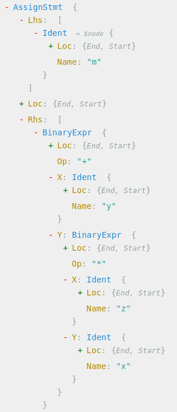

A common question that comes up when writing AST-based tooling in Go is "how do I find a node's parent?", or more generally, "what are all the ancestors of a given node?"
Go's AST package does not come with parent links out of the box; this is a common choice in AST libraries [1]. Parent links are rarely needed, but they carry significant overheads in terms of memory usage and CPU time. Typical AST nodes can be fairly compact and adding a pointer to each node can increase its size considerably. Keeping this pointer populated properly also takes CPU time; furthermore, in GC'd languages like Go, parent links are a significant source of pointers to scan and keep track of. All of these are fixed costs imposed on any analyzer, just for the sake of the few that may need this information.
But say your analysis really does need parent links? What do you do then? This post explores a few options.
Problem statement
For the sake of discussion, we need a concrete problem to focus on. To keep it simple, we'll use something artificial: suppose we want to find all the binary multiplication expressions that are nested inside other binary expressions. For example:
m = y + z * x
The z * x sub-expression is represented by an ast.BinaryExpr node, which is nested inside another ast.BinaryExpr (the +). Here's a graphical AST dump from my new favorite AST viewer:
We'll consider the following code as fulfilling our condition too:
m = x + foo(y*z)
The multiplication is nested inside the addition, even though the multiplication's immediate parent is a CallExpr.
Approach #1: ad-hoc
The first approach that comes to mind is "just use some flags during traversal"; I'll call it the ad-hoc approach, and it's a perfectly valid way to solve the problem. Let's start with the usual tool scaffolding (the full code is on GitHub):
var fset = token.NewFileSet()
func main() {
const mode packages.LoadMode = packages.NeedName |
packages.NeedTypes |
packages.NeedSyntax |
packages.NeedTypesInfo
flag.Parse()
if flag.NArg() != 1 {
log.Fatal("Expecting a single argument: directory of module")
}
cfg := &packages.Config{Fset: fset, Mode: mode, Dir: flag.Args()[0]}
pkgs, err := packages.Load(cfg, "./...")
if err != nil {
log.Fatal(err)
}
for _, pkg := range pkgs {
processPackage(pkg)
}
}
func processPackage(pkg *packages.Package) {
if len(pkg.Errors) > 0 {
for _, e := range pkg.Errors {
fmt.Printf("Error: %s\n", e)
}
os.Exit(1)
}
discoverNodeParentsAdhoc(pkg)
}
As usual, our AST traversal employs ast.Inspect, which visits the entire AST in depth-first order. We can cleverly maintain a "I have a ast.BinaryExpr parent" state through the traversal, but it will be much easier to invert the logic, like this:
func discoverNodeParentsAdhoc(pkg *packages.Package) {
for _, fileAst := range pkg.Syntax {
ast.Inspect(fileAst, func(n ast.Node) bool {
if bexpr, ok := n.(*ast.BinaryExpr); ok {
findBinMulChild(bexpr.X)
findBinMulChild(bexpr.Y)
return false
}
return true
})
}
}
func findBinMulChild(ancestor ast.Node) {
ast.Inspect(ancestor, func(n ast.Node) bool {
if bexpr, ok := n.(*ast.BinaryExpr); ok && bexpr.Op == token.MUL {
fmt.Printf("found BinaryExpr(*) as a child of another binary expr: %v\n",
fset.Position(n.Pos()))
}
return true
})
}
For each ast.BinaryExpr, we start another recursive visit of both its children. If this visit finds a binary * - bingo! Note that we don't do double work here, since after calling findBinMulChild on the left and right children we return false. That's the beauty of ad-hoc approaches - they are, well.. ad-hoc :-) We only need to do as much work as our analysis requires. The obvious disadvantage is that every task is different and we can't always reuse a lot between them.
Next, let's try something more generic.
Approach #2: keeping manual track of parents
Recall the original problem this post started with: AST nodes have no parent links. If we had a way to follow a chain of parents, solving the task would be easy: once we get to a * node, we simply go up the chain of parents and see if there are any ast.BinaryExprs in it.
Well, it turns out to be pretty easy to build a list of parents manually. The key insight is that ast.Inspect helps us by calling our traversal function with nil at the end of each node's children. We can use that for bookkeeping:
func discoverNodeParentsManualStack(pkg *packages.Package) {
for _, fileAst := range pkg.Syntax {
var ancestors []ast.Node
ast.Inspect(fileAst, func(n ast.Node) bool {
if bexpr, ok := n.(*ast.BinaryExpr); ok && bexpr.Op == token.MUL {
// Walk the ancestor stack to find if one of them is also a BinaryExpr
for i := len(ancestors) - 1; i >= 0; i-- {
if _, ok := ancestors[i].(*ast.BinaryExpr); ok {
fmt.Printf("found BinaryExpr(*) as a child of another binary expr: %v\n",
fset.Position(n.Pos()))
break
}
}
}
if n == nil {
// Pop, since we're done with this node and its children.
ancestors = ancestors[:len(ancestors)-1]
} else {
// Push this node on the stack, since its children will be visited
// next.
ancestors = append(ancestors, n)
}
return true
})
}
}
This code keeps a stack of the node's ancestors in a slice. Since the traversal is DFS, whenever out function is called we push the current node onto the stack (it will serve as an ancestor for subsequent calls), and when called with nil (meaning that we're done with this a node's children) we pop it off.
When an actual * node is found, it's straightforward to walk the stack upwards looking for an ast.BinaryExpr [2].
Approach #3: using Inspector.WithStack
The previous section showed that it's fairly easy to maintain a full stack of ancestors while traversing the AST, but even this minimal effort is unnecessary. The Go tooling packages come with some useful helpers, and this is one use case that's already covered.
The ast/inspector package provides helper functions for AST traversal. One capability that's very useful for our scenario is WithStack. You can read its documentation yourself, so without further ado here's how we solve our concrete problem using it:
func discoverNodeParentsWithStack(pkg *packages.Package) {
insp := inspector.New(pkg.Syntax)
insp.WithStack(nil, func(n ast.Node, push bool, stack []ast.Node) bool {
if bexpr, ok := n.(*ast.BinaryExpr); push && ok && bexpr.Op == token.MUL {
for i := len(stack) - 2; i >= 0; i-- {
if _, ok := stack[i].(*ast.BinaryExpr); ok {
fmt.Printf("found BinaryExpr(*) as a child of another binary expr: %v\n",
fset.Position(n.Pos()))
break
}
}
}
return true
})
}
Approach #4: with PathEnclosingInterval
Finally, there's yet another tool we could use - PathEnclosingInterval from the ast/astutil package. This function is a bit unusual, in that it takes a token position, and returns all the AST nodes that contain that position in the source. It's a very specialized API that's mostly useful for text editors, but it can also solve our task for this post:
func discoverNodeParentsPathInterval(pkg *packages.Package) {
for _, fileAst := range pkg.Syntax {
ast.Inspect(fileAst, func(n ast.Node) bool {
if bexpr, ok := n.(*ast.BinaryExpr); ok && bexpr.Op == token.MUL {
path, _ := astutil.PathEnclosingInterval(fileAst, bexpr.Pos(), bexpr.End())
for i := len(path) - 1; i >= 0; i-- {
if _, ok := path[i].(*ast.BinaryExpr); ok && path[i] != bexpr {
fmt.Printf("found BinaryExpr(*) as a child of another binary expr: %v\n",
fset.Position(n.Pos()))
break
}
}
}
return true
})
}
}
To be clear: I don't think this approach makes a whole lot of sense in this scenario, and it's much better to use WithStack. I'm just including it for completeness.
| [1] | In my pycparser project, this is a FAQ. |
| [2] | For this particular analysis the order of stack traversal doesn't matter, so our loop could go from 0 to len-1 instead. |